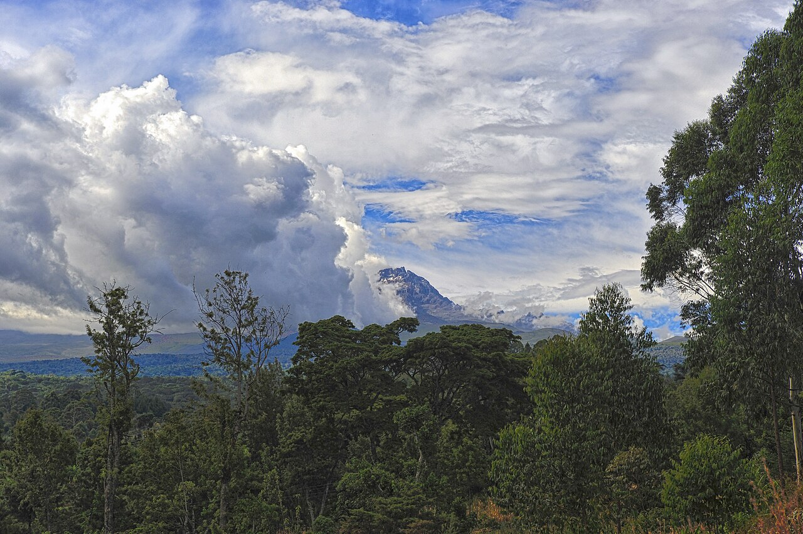

The northern safari circuit
Imagine wide plains, crater landscapes and days shaped around the wildlife and places that interest you most.
Explore the placesAsk about this theme
Start with a feeling, a place or a question. We’ll shape the route together as our first journeys take form.
Browse the collectionWe are preparing our first Tanzania itineraries. Until the routes, inclusions and dates are confirmed, every journey remains a conversation and every quote is tailored.
These themes are inspiration, not fixed packages. Each can be adapted once travel dates, pace and details are discussed.
Imagine wide plains, crater landscapes and days shaped around the wildlife and places that interest you most.
Explore the placesAsk about this theme
From Kilimanjaro to the foothills and forest paths, bring your preferred pace and interests into the conversation.
Explore the trailsAsk about this theme
Explore the markets, histories, flavours and traditions that give each place its own texture.
Explore culture & heritageAsk about this theme
Pair inland discovery with time on the coast or islands, if that combination fits your plans.
Explore the coastAsk about this themePair landscapes, coast and local experiences in ways that feel right for you. These are ideas to explore together, not fixed routes.
A journey idea
Pair time in the northern circuit with a slower finish by the Indian Ocean.

A journey idea
Bring highland landscapes and coastal time into the same planning conversation.
A journey idea
Make room for markets, heritage and local life alongside the landscapes.
Start with the essentials. Details can be refined together after your first enquiry.
Tell us when you hope to travel, who is coming and what you want to experience.
Discuss the places, pace and travel style that could suit your plans.
We’ll share confirmed itinerary details and a quote before you decide.
Send a short enquiry and we can begin with your interests. No prices or package details are assumed in advance.